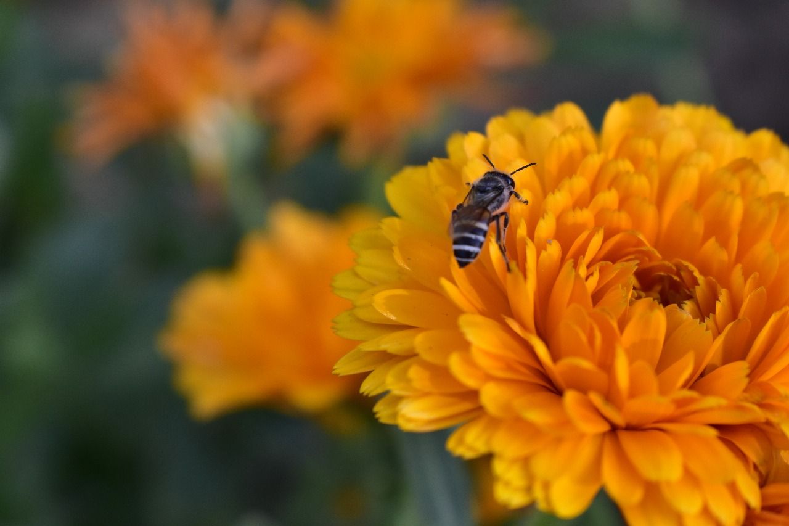
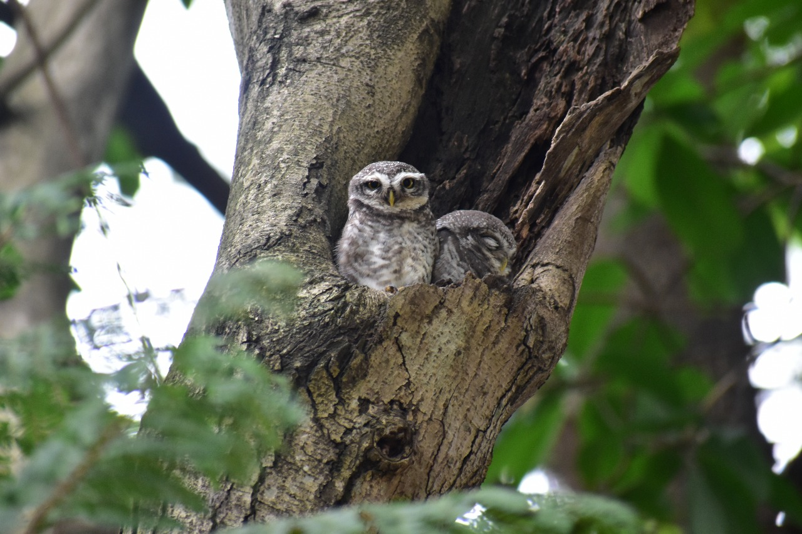
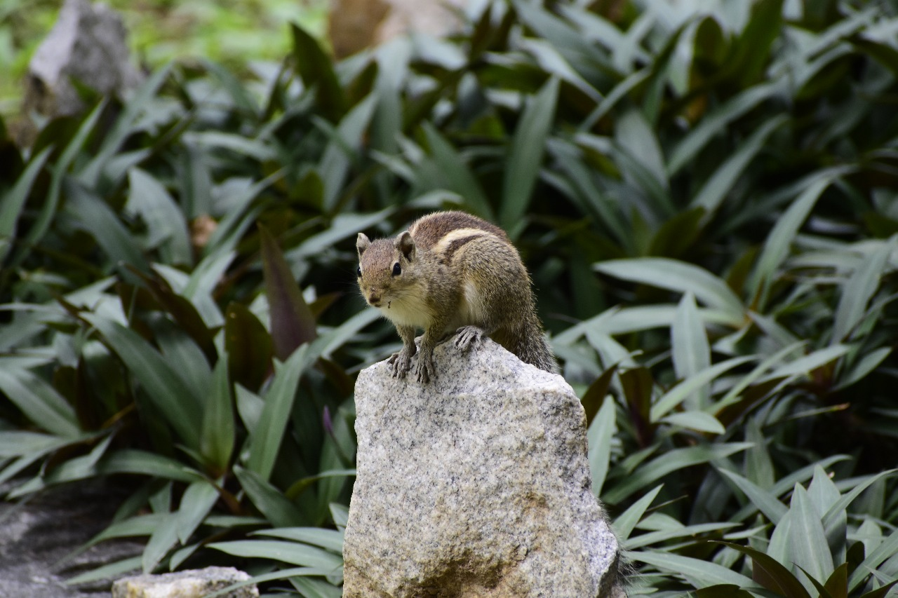
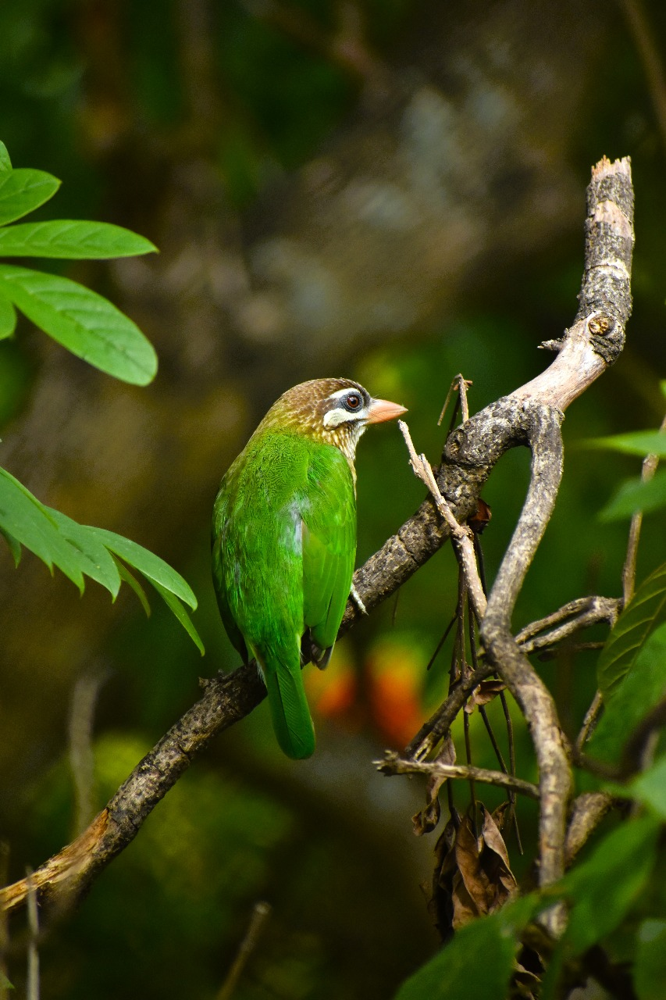
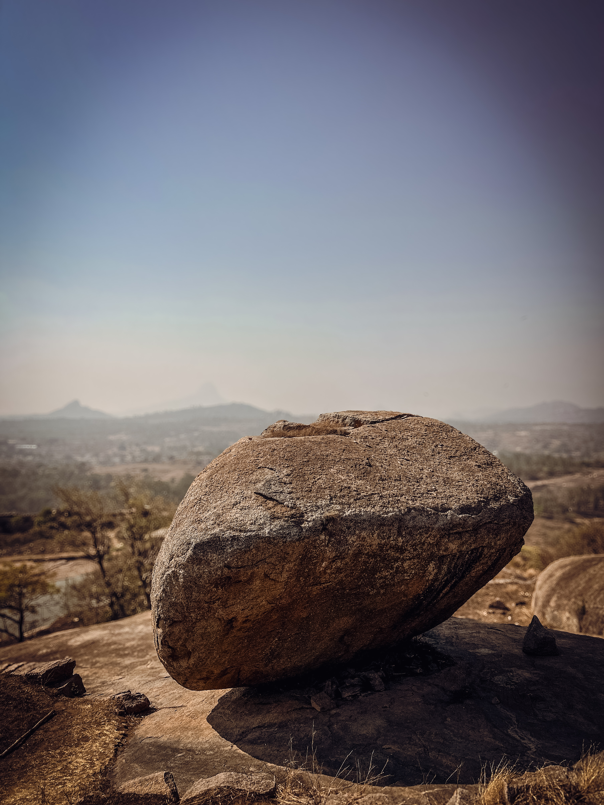

Nature Photography
Nature photography captures the essence of the natural world, featuring breathtaking landscapes, diverse wildlife, and intricate plant life. This art form reveals the unnoticed wonders of Earth's ecosystems, preserving fleeting moments in time. From detailed macro shots of tiny creatures to vast panoramic scenes of mountains and oceans, nature photographers aim to inspire awe and appreciation for our environment. Mastering this craft requires patience, an eye for composition, and an understanding of natural light. Beyond showcasing beauty, nature photography serves as a powerful reminder of the importance of environmental conservation.

Camera Settings
Shutter Speed: 1/250s
Aperture: F/5.6-F/5.8
ISO: 200-400

Camera Settings
Shutter Speed: 1/250s-1/500s
Aperture: F/5.6-F/8
ISO: 200-400

Camera Settings
Shutter Speed: 1/100s-1/200s
Aperture: F/4-F/5.6
ISO: 400-800

Camera Settings
Shutter Speed: -1/100s-1/200s
Aperture: F/4.-F/5.6
ISO: 400-800

Camera Settings
Shutter Speed: 1/30s-1/60s
Aperture: F/2.8-F/4
ISO: 800-1100

Camera Settings
Shutter Speed: 1/60s
Aperture: F/2.8-F/4
ISO: 1000-1600